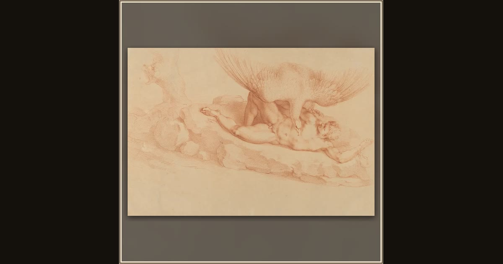

Prometheus, naked, chained to a rock, looking up at an eagle standing over him
Francesco Bartolozzi · 1795 · met
Prometheus lies chained to a rock as a large eagle stands over him with its wings spread; Hermes foretells the bird's attack after Prometheus returns to daylight (1022). Explore its place in Aeschylus's Plays, Prometheus Bound, line 1024.